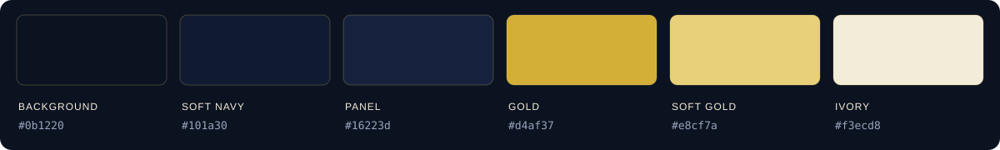

A place to learn
Materials, assignments, examinations, and role-specific workflows.
COMPLETED PROJECT BASELINE
A role-based school portal in the Rinascita palette. This local guide keeps setup and maintenance close, without turning documentation into another application.
Completion is the maintainer-declared baseline. No build, uptime, or security certification is implied by this guide.
Materials, assignments, examinations, and role-specific workflows.
Guru, Siswa/Murid, Kurikulum, Kepala Sekolah, and Admin workspaces.
Navy surfaces, warm foregrounds, gold accents, responsive layouts, and purposeful movement.
LOCAL DEVELOPMENT
Configure your backend database/JWT settings privately. Retain all provider-specific auth values required by your working configuration.
Create frontend/.env.development.local:
NEXT_PUBLIC_BACKEND_URL=http://localhost:4000/apiReal database credentials never belong in this guide or a public commit.
From the repository root, with environment values configured:
cd backend
npm ci
npx prisma generate
cd ../frontend
npm ciFor a fresh database, apply the tracked migrations with npx prisma migrate deploy from backend. Review seed code before choosing to seed; it changes database records.
Backend terminal:
cd backend
npm run devFrontend terminal:
cd frontend
npm run devFrontend localhost:3000 · Backend localhost:4000/api
PRODUCTION CONFIGURATION
Use the deployed backend's HTTPS API URL ending in /api. Production builds reject localhost and loopback addresses.
NEXT_PUBLIC_BACKEND_URL=https://YOUR_BACKEND_DOMAIN/apiReplace the example domain before building.
Keep Neon connections, JWT secret, frontend origin, and any configured auth-provider secrets in the backend environment. Deploy frontend and backend separately.
Apply database migrations through a controlled deployment step. Do not reset existing school data to fix a local file-lock error.
SMALL DETAILS, FEWER SURPRISES
Stop the identified backend watcher or Prisma Studio normally. Inspect process command lines rather than killing unrelated Node processes. A locked DLL does not call for a database reset.
Keep theme styles reusable. Preserve focus states, mobile layouts, and reduced-motion fallbacks. GitHub Markdown itself does not run this HTML guide's styles or scripts.
Native Guru transitions and pathname-based entrances have different coverage. The background loop is not a rigged Live2D character. Landing reveals intentionally leave already-visible content readable.
The baseline is complete as declared by the maintainer. This documentation package did not run app builds, production login flows, uptime checks, or a security audit.
